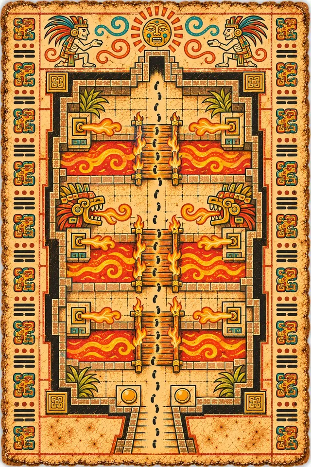
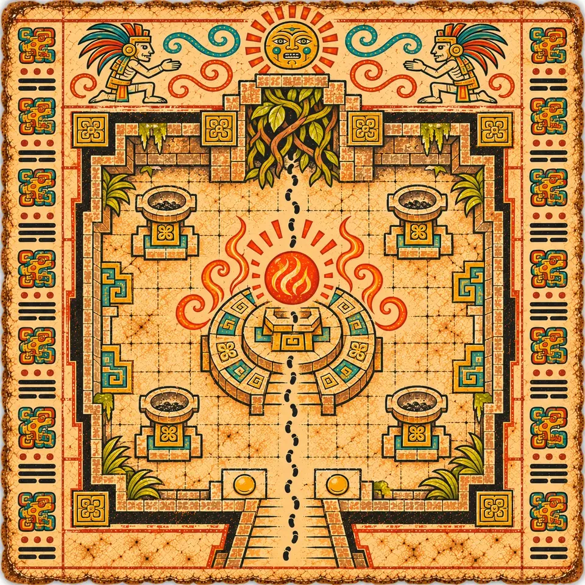
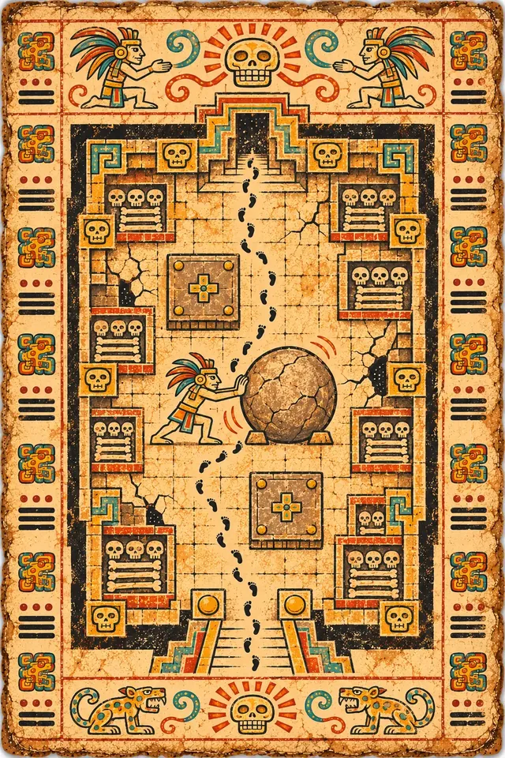
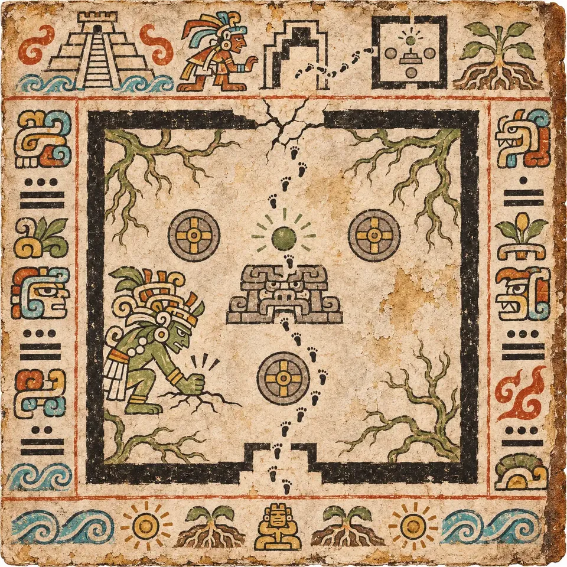
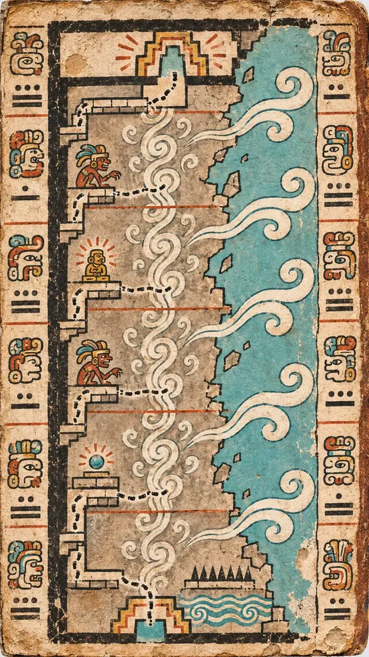
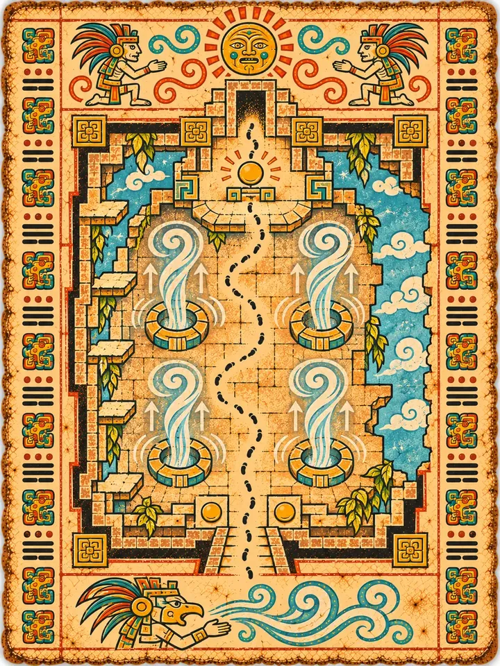
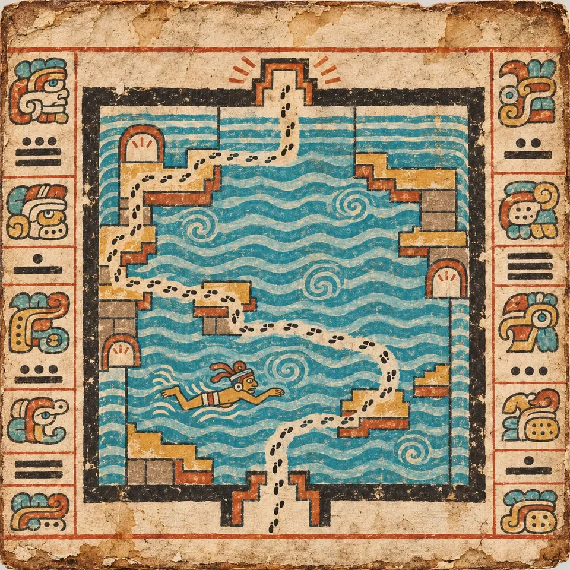
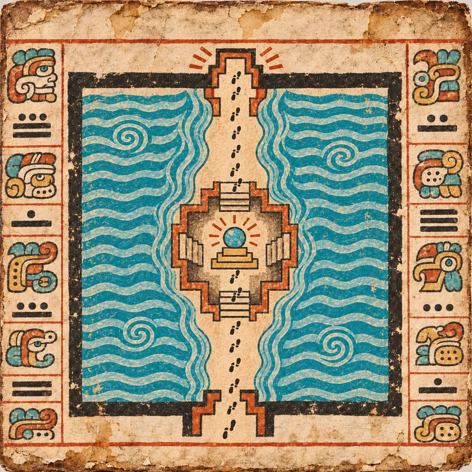

T4A
The Lava Channels
Three channels of glowing lava, crossed by burning rope bridges that collapse behind you, while serpent heads on the banks breathe jets of fire.



Home / The Climb
The Climb
Four sanctums, four elements: the tier where Climbers claim the Elemental Orbs.
“The orbs scattered, and guardians were born.”
K'in
Each of the four floors keeps one of the scattered orbs. Fire, Earth, Wind and Water are permanent powers: once a Climber holds one, rooms they have already cleared can be read in a new way.
T4A
Three channels of glowing lava, crossed by burning rope bridges that collapse behind you, while serpent heads on the banks breathe jets of fire.


T4B
Raise the red Fire Orb and the Ember Censer, light the four corner braziers, and burn away the vine-choked door.


Then the Portal Chamber, and up.

T4C
A crypt of bone niches, stylized rather than gory. Push a boulder onto heavy plates while guardians crowd in; cracked walls hide side routes.



T4D
A root-covered sanctum. Claim the Earth Orb, and its ground-pound shatters the wall to reveal the exit.


Then the Portal Chamber, and up.

T4E
A hall high in the pyramid whose outer wall has collapsed, open to the sky and the jungle canopy. Cling to narrow ledges as gusts push you toward the edge and updrafts lift you over the gaps.



T4F
A roofless spire with four swirling updraft columns. Claim the Wind Orb and glide between them to a high ledge.


Then the Portal Chamber, and up.

T4G
A huge flooded cistern whose water level keeps rising. Swim for high platforms and air-pocket alcoves against the currents.



T4H
Raise the blue Water Orb, and the water parts like walls to reveal a stone path to the Key Orb.


Then a Spirit Shrine to rest, and the Portal Chamber.

Fire burns, Earth breaks, Wind lifts and Water parts. Each orb is a permanent power that stays with a Climber between runs, and each opens routes in floors they have already climbed.

T4-01

T4-02

T4-03

T4-04

T4-05

T4-06

T4-07